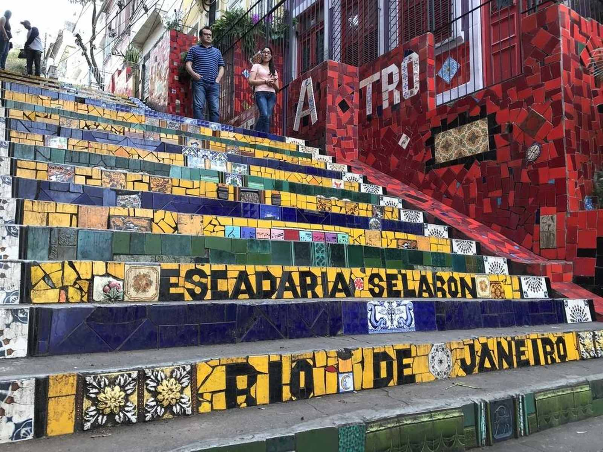

Rio de Janeiro: conheça alguns lugares famosos para visitar
Cristo Redentor
Literalmente de braços abertos, o Cristo Redentor, no morro do Corcovado, recebe diariamente milhares de turistas de diversos lugares do mundo. É necessário subir 700 metros do nível do mar para, enfim, chegar ao pico onde está a estátua que é cartão postal da cidade. O Cristo Redentor fica dentro do Parque Nacional da Tijuca e existem duas maneiras de chegar: nas vans autorizadas do Paineiras, que saem de diversos pontos do Rio, e no trem do Corcovado.
Pão de açúcar
O Bondinho do Pão de Açúcar está entre os principais pontos turísticos do Rio de Janeiro e foi inaugurado em 1912, sendo o primeiro teleférico do Brasil e o terceiro no mundo. Ele liga o Morro da Urca ao Morro do Pão de Açúcar – e mais de 40 milhões de pessoas já andaram nos bondinhos.
Lá do alto é possível encontrar uma deslumbrante paisagem da cidade, incluindo a enseada de Botafogo, a orla de Copacabana e a entrada da Baía de Guanabara. Vale a pena colocar um dos cartões postais da cidade no seu roteiro.
Escadaria Selarón

A Escadaria Selarón fica no Rio de Janeiro, entre os bairros de Santa Teresa e Lapa. É uma obra arquitetônica decorada pelo artista chileno Jorge Selarón, que a declarou uma homenagem ao povo brasileiro.
A visita não custa nada e realmente merece a sua atenção por ser um lugar bem bonito. Além disso, o local aparece em diversos videoclipes da música mundial, por exemplo, entre artistas como U2 e Snoop Dogg.
Lapa e os melhores bares do Rio
A Lapa é um bairro do Rio de Janeiro conhecido por ser boêmio e vibrante, com diversos bares tradicionais, casas noturnas com música ao vivo, salões de dança e rodas de samba ao ar livre abaixo dos Arcos da Lapa, um aqueduto em estilo romano que você deve aproveitar para fotografar.
Há opções para todos os bolsos. É possível tomar um copão de caipirinha comprando em barraquinhas de rua por R$ 15, como você também pode pedir o drink em algum bar mais arrumadinho por ali.
Fique atento! Na alta temporada de verão, muita gente procura um bar com cerveja gelada para se refrescar do calor carioca e a disponibilidade de mesas pode ficar limitada, com necessidade de reservas.